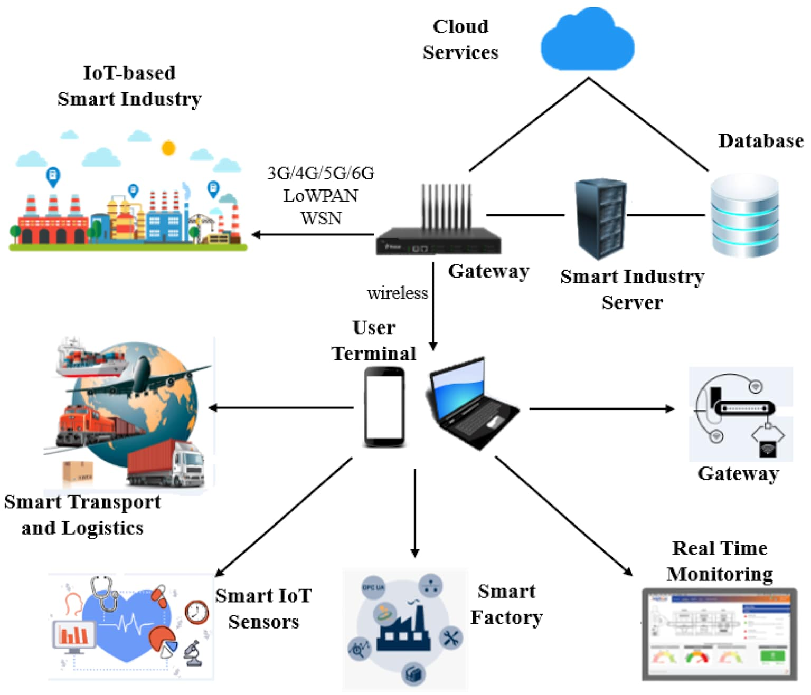
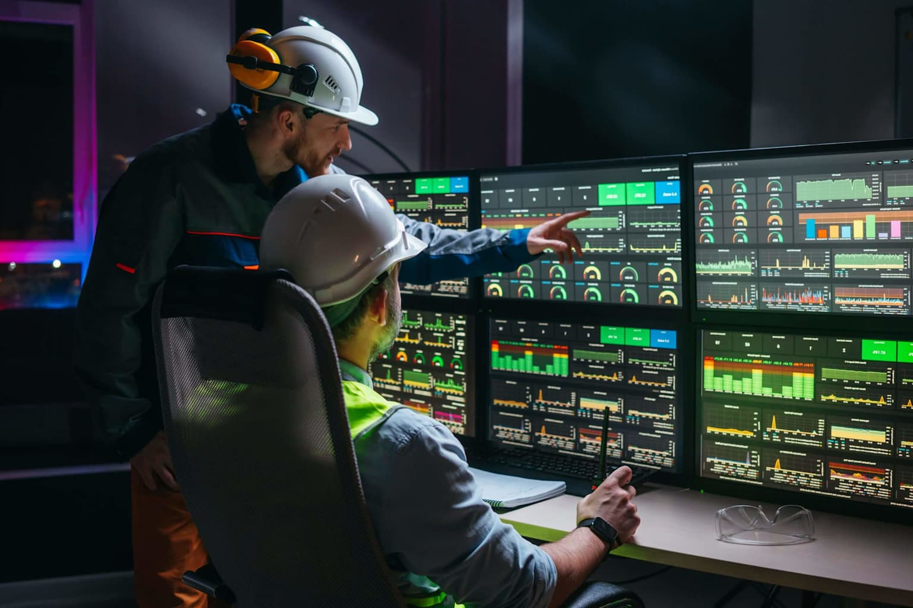
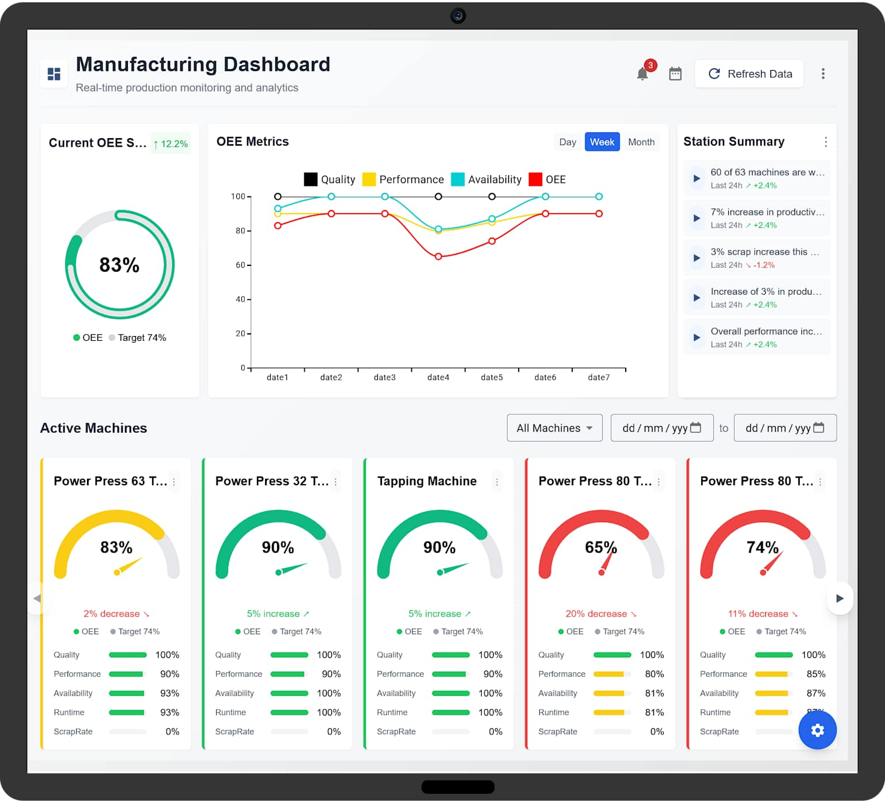

Az ipari informatika területén a mesterséges intelligencia szükségessége két fő tényezőből ered: az exponenciálisan növekvő adatmennyiségből és az automatizálás iránti egyre nagyobb igényből. Ez a modul bemutatja, hogy miért vált elengedhetetlenné az MI alkalmazása a modern gyártásban.
Modern ipari kontroll központ több monitorral és nagy adatvizualizációs fallal komplex rendszerek monitorozására
1. Növekvő komplexitás és adatmennyiség
1.1 A modern ipari rendszerek adattermelése
A mai ipari környezetben a gyártási folyamatok olyan összetett rendszereket alkotnak, amelyek hatalmas mennyiségű adatot generálnak minden pillanatban. Ez az adatáradat messze meghaladja az emberi feldolgozóképességet, így új megközelítésekre van szükség.
A modern gyárak egyetlen nap alatt terabájtokban mérhető adatmennyiséget termelnek, amely magában foglalja a gépi paramétereket, környezeti feltételeket, termelési mutatók és minőségi adatokat.
1.2 Szenzorok és IoT eszközök
Az ipari Internet of Things (IIoT) forradalmian megváltoztatta a gyártóipart. A gépek és berendezések ma már tele vannak különféle szenzortípusokkal:
Hőmérséklet-szenzorok
Folyamatos hőmérsékleti monitoring
Nyomás-szenzorok
Rendszernyomás mérése és ellenőrzése
Rezgés-szenzorok
Gépek állapotának figyelése
Áramlás-szenzorok
Folyadékok és gázok áramlásának mérése

IoT-alapú okos ipari rendszer diagram, amely felhőszolgáltatásokat, átjárókat, okos gyárakat, IoT szenzorokat, szállítási logisztikát és valós idejű monitorozást köt össze vezeték nélküli hálózatokon keresztül
1.3 Big Data kihívása
A Big Data jelenség különösen hangsúlyos az ipari szektorban, ahol három fő jellemző határozza meg az adatok természetét:
Volume (Mennyiség)
Óriási adatmennyiségek keletkeznek
Velocity (Sebesség)
Nagy sebességgel generálódnak az adatok
Variety (Változatosság)
Strukturált és strukturálatlan adatok keveredése

Ipari munkások komplex adatdashboard-okat figyelnek több képernyőn egy kontrollteremben, kiemelve az ipari adatkezelés mértékét és összetettségét
2. Automatizálás és hatékonyságnövelés igénye
2.1 Intelligens automatizálás
A hagyományos automatizálás már nem elegendő a mai versenyképesség fenntartásához. Az MI-vezérelt automatizálás lehetővé teszi:
- Adaptív működés: a rendszerek képesek alkalmazkodni a változó körülményekhez
- Önálló döntéshozatal: minimális emberi beavatkozással működnek
- Folyamatos tanulás: a rendszerek tapasztalataik alapján fejlődnek
 Robotkarok automatizálják az autószerelést egy modern ipari gyárban, kiemelve az MI-vezérelt folyamatoptimalizálást és megnövelt termelési hatékonyságot
Robotkarok automatizálják az autószerelést egy modern ipari gyárban, kiemelve az MI-vezérelt folyamatoptimalizálást és megnövelt termelési hatékonyságot
2.2 Folyamatoptimalizálás
Termelékenység növelése
- 15-30%-kal csökkenthető a gyártási idő
- Automatikus paraméter-beállítás
- Valós idejű finomhangolás
Selejt csökkentése
- Korai hibák detektálása
- Prediktív minőségellenőrzés
- Automatikus korrekciók
2.3 Hibakeresés és diagnosztika
Prediktív karbantartás
Hibák előrejelzése a bekövetkezés előtt, 25-30%-os csökkentés a karbantartási költségekben
Gyors probléma-azonosítás
Komplex rendszerek állapotának valós idejű elemzése és automatikus hibabeazonosítás

Valós idejű ipari dashboard-ok, amelyek szenzor adatokat és folyamat metrikákat jelenítenek meg a komplex gyártási rendszerek hatékony kezeléséhez
Összefoglalás
A mesterséges intelligencia alkalmazása az ipari informatikában már nem luxus, hanem létszükséglet. A növekvő adatmennyiség és rendszer-komplexitás, valamint az automatizálás és hatékonyság iránti igények együttesen teszik szükségessé az MI technológiák bevezetését.
Kulcs előnyök:
- Adatkezelés: nagy mennyiségű ipari adat feldolgozása és elemzése
- Automatizálás: intelligens, adaptív gyártási folyamatok
- Hatékonyság: csökkentett költségek és növelt termelékenység
- Minőség: javuló termékminőség és csökkent selejt
- Karbantartás: prediktív karbantartás és csökkent leállási idők